| 日付 | 2014年3月29日（土） |
|---|---|
| 山域 | 丹沢 |
| メンバー | 家族（妻、長女・3歳、長男・0歳） |
| 山行形態 | 子連れ日帰り |
| アクセス | 車 |
| ルート (Map) | ヤビツ峠 (9:30) - (10:28) 岳ノ台 (11:51) - (12:44) ヤビツ峠 |
前々から行こうと計画を立てていた岳ノ台に行く。
2時間弱でぐるっと一周できるコースがあるため子連れに最適だ。
標高が少し高いため積雪量が多く、なかなか行く機会に恵まれなかったが
ネットで調べると、ここ最近の陽気でようやく雪が解けてきたようだ。
ヤビツ峠の駐車場に到着。標高760m。
ヤビツ峠への道は自転車ライダーの聖地のような場所になっていて、ここに至るまで自転車だらけだった。
遅い時間の到着だが、駐車場にはいくらかまだ空きがある。
周囲の山は積雪があるため、訪問者はまだ少ないようだ。
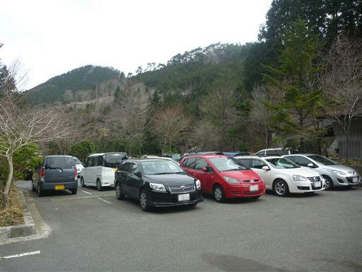
ここは大山や塔ノ岳への起点だが、今回初めて岳ノ台への道に向かう。
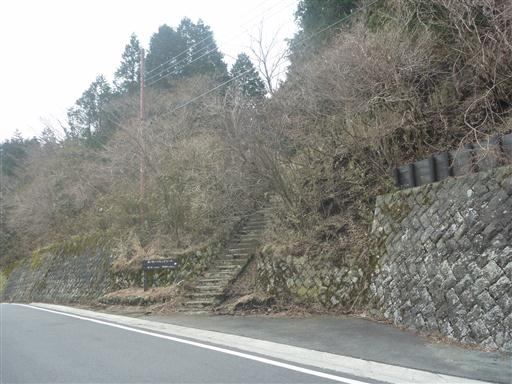
道はそれなりに整備されているが、階段の1段1段が大きい場所がある。
体が小さい娘は大変そうだ。
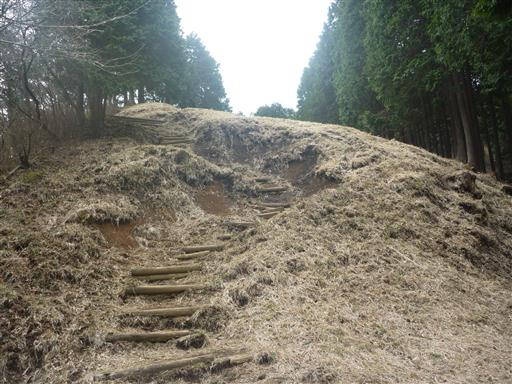
足元を見ると残雪が見える。

しばらく登ると小ピークに到着する。寂れた東屋が建っている。
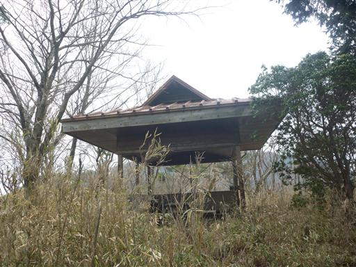
小ピークを下ると送電鉄塔が見えてくる。
娘は「東京タワー」と言っている。どこで東京タワーを覚えたのだろう…？
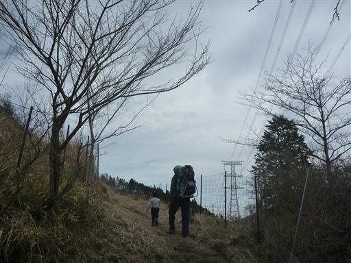
登山道に雪が目立つようになってきた。
雪の上を歩かなければならない場所も少しあり、歩きにくい。
もう1週間ほど訪問を待つべきであった。
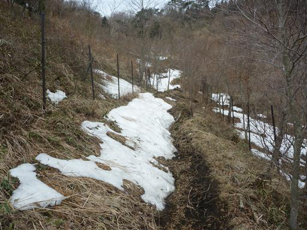
登山道がだんだん藪っぽくなってくる。
棘のある植物が登山道に張り出していて足に刺さるため、娘がグズグズになってきた。
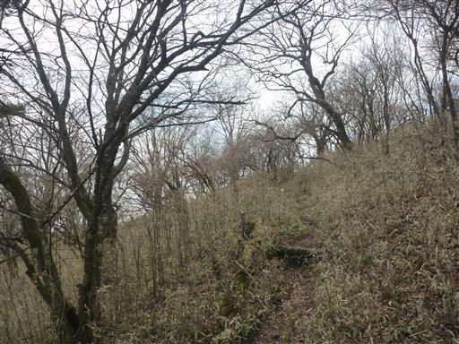
グズグズ言いながらもなんとか岳ノ台山頂に到着する。標高899m。
コースタイム35分のところを1時間くらいかかってしまった。
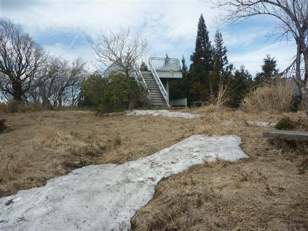
展望台に上ると正面に富士山の姿が見える。
今日は曇り空だが、富士山だけはきれいに輝いている。
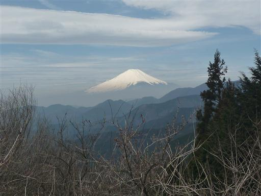
反対方向には端正な形の大山が望める。
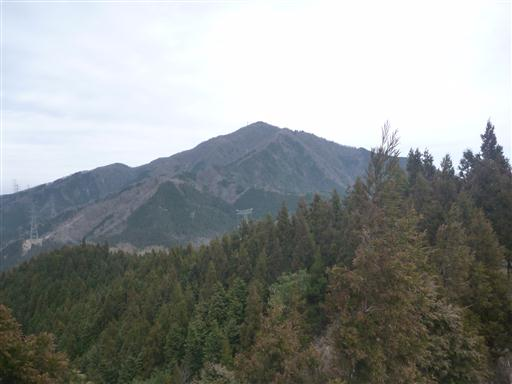
ベンチ兼テーブルに腰かけて昼食タイム。
誰が考えたのか知らないが、このベンチ兼テーブルは非常に使い勝手が良い。
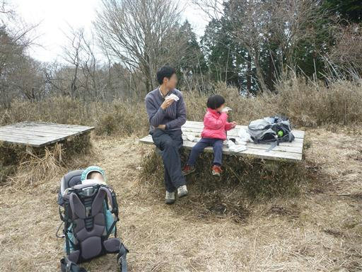
昼食が終わったら山頂に残る雪で少し遊ぶ。
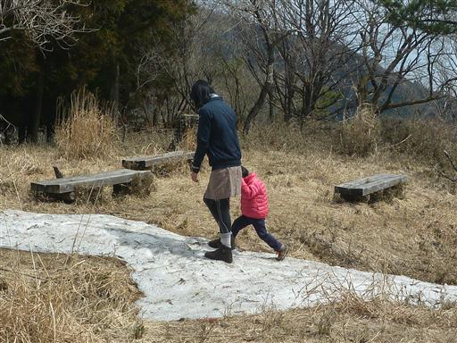
下山は登りとは別コースをたどる。正面に見えるのは二ノ塔だ。
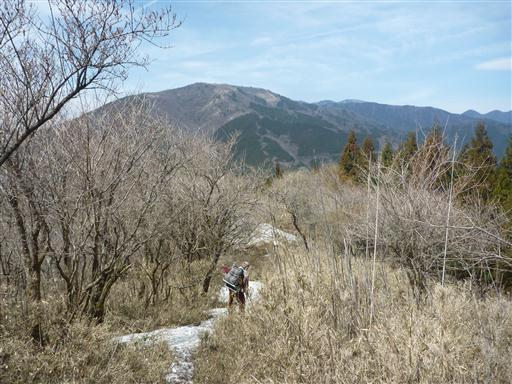
下り始めてすぐに登山道が雪に覆われる。
一箇所だけではなく、どこまでも雪道が続いている。
子供がいると厳しい道のため、こちらの道はあきらめて引き返すことにする。
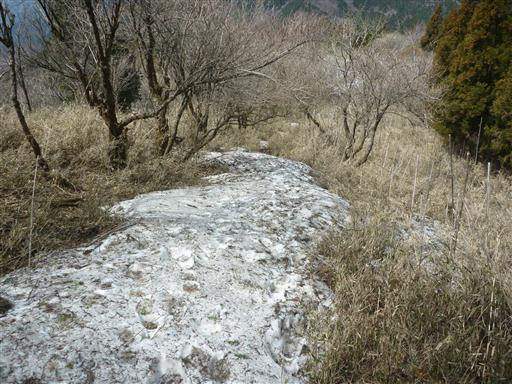
改めて、元来た道を下って行く。
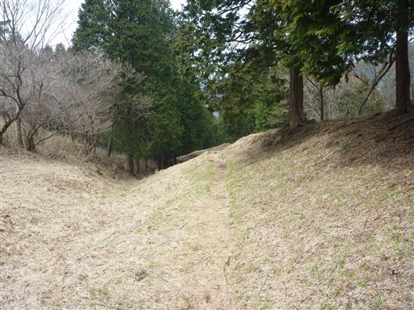
無事ヤビツ峠に下山。
4月が近づき暖かい日が続いているのに、思いの外、雪が多かった。
まだまだ高い山には登れない日が続きそうだ。
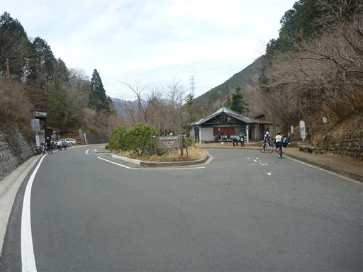